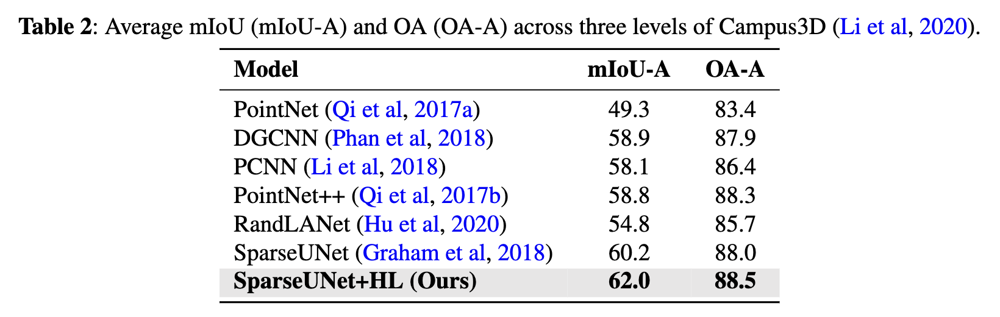
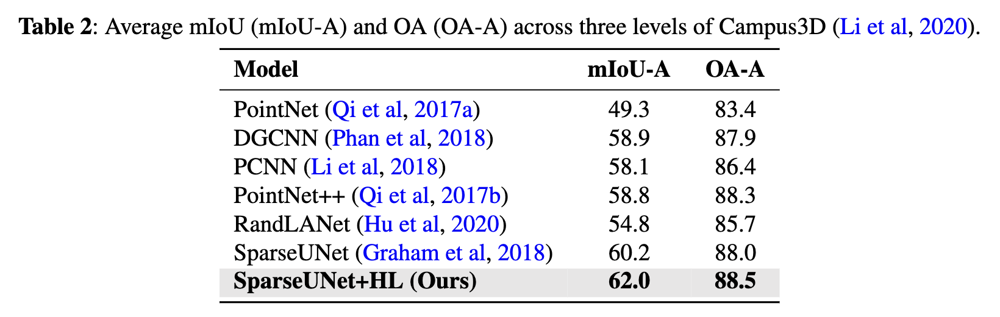

Across nearly all hierarchical levels and models, we observe
consistent performance gains when employing HL. The sole
deviation from this trend is with the multi-classifier variant
of PointNet++ (i.e., PointNet++ without HL), which outperforms its HL counterpart at the most coarse-grained level.
A potential explanation for this could be that the inherent
structure and feature representation of the raw PointNet++
model is better suited for coarse-grained segmentation tasks,
whereas HL might introduce complexities that marginally
diminish performance at that specific level. Nevertheless, the
overall superior performance of the HL mechanism over
the traditional multi-classifier underscores its potency in 3D
hierarchical semantic segmentation. A potential explanation
for the HL method’s enhanced performance is that the intrinsic
relationships among hierarchical label layers may provide
supplementary geometric information beneficial for semantic
segmentation
Results for the three models, both with and without HL, can be found in Tables 3 through 5. The mIoU
has been computed for each of the 17 part categories
as well as the average across three levels of segmenta-
tion: coarse-, middle-, and fine-grained. From the data
in Tables 3 to 5, it’s evident that SparseUNet, Rand-
LANet, and PointNet++ models equipped with HL
outperform their non-HL counterparts in 12, 13, and
12 categories, respectively, in terms of mIoU. Additionally, HL has been shown to improve the average
mIoU across all 17 categories by approximately 1%
to 2%, further underscoring the benefits of its integration. Significant observations include: 1) the class
categories that have shown improvement with HL
vary considerably among different backbone models,
such as SparseUNet, RandLANet, and PointNet++,
and 2) there are certain categories where HL did not
enhance performance. These variations suggest that
HL’s effectiveness is not uniform across all categories
and may be influenced by the inherent characteristics of the backbone models. This variability indicates
a good generalization capability of HL, as different
models, with their unique strengths and weaknesses,
may inherently perform well or poorly on certain class
categories.
In this subsection, we evaluate the proposed HL
approach on another 3D dataset, SensatUrban (Hu
et al, 2021). This dataset is not originally annotated in
a hierarchical manner. To create a hierarchical structure, we employ our class hierarchy mining method
(refer to Sec. 4.4), generating a two-level class hierarchy, which is displayed by Fig. 7. The enhanced
dataset, which we denote as “SensatUrban-H”, will be
publicly available once the paper is accepted.
Semantic segmentation results for SensatUrban-
H are presented in Table 6. Aside from the OA of
SparseUNet at the coarse-grained level, HL has led to
significant improvements. Most notably, in the finegrained (level 2) segmentation task, HL boosts the
performance of RandLANet by over 15% in terms of
mIoU and around 9% in terms of OA.


 
